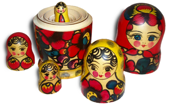

ACM-ICPC World Finals 2013 · Problem H
Matryoshkas are sets of traditional Russian wooden dolls of decreasing size placed one inside the other. A matryoshka doll can be opened to reveal a smaller figure of the same sort inside, which has, in turn, another figure inside, and so on.

The Russian Matryoshka Museum recently exhibited a collection of similarly designed matryoshka sets, differing only in the number of nested dolls in each set. Unfortunately, some over-zealous (and obviously unsupervised) children separated these sets, placing all the individual dolls in a row. There are n dolls in the row, each with an integer size. You need to reassemble the matryoshka sets, knowing neither the number of sets nor the number of dolls in each set. You know only that every complete set consists of dolls with consecutive sizes from 1 to some number m, which may vary between the different sets.
When reassembling the sets, you must follow these rules:
Your time is valuable, and you want to do this reassembly process as quickly as possible. The only time-consuming part of this task is opening and subsequently closing a doll, so you want to minimize how often you do this. For example, the minimum number of openings (and subsequent closings) when combining group [1, 2, 6] with the group [4] is two, since you have to open the dolls with sizes 6 and 4. When combining group [1, 2, 5] with the group [3, 4], you need to perform three openings.
Write a program to calculate the minimum number of openings required to combine all disassembled matryoshka sets.
The input consists of a single test case. A test case consists of two lines. The first line contains one integer n (1 ≤ n ≤ 500) representing the number of individual dolls in the row. The second line contains n positive integers specifying the sizes of the dolls in the order they appear in the row. Each size is between 1 and 500 inclusive.
Display the minimum number of openings required when reassembling the matryoshka sets. If reassembling cannot be done (some of the kids might have been excessively zealous and taken some dolls), display the word impossible.
7 1 2 1 2 4 3 3
impossible
7 1 2 3 2 4 1 3
7